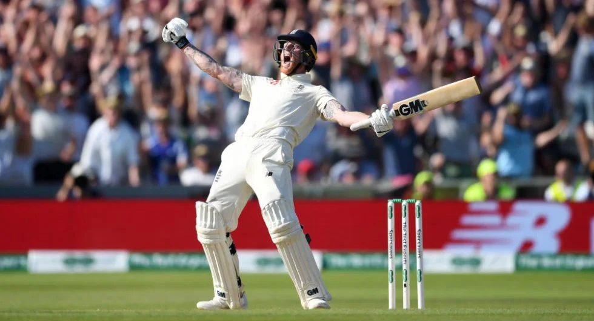
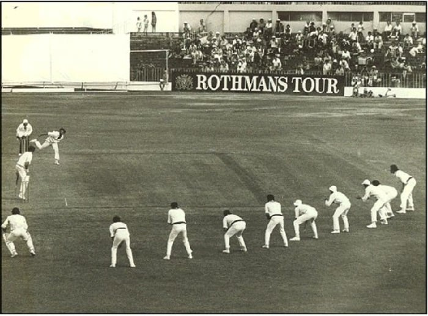
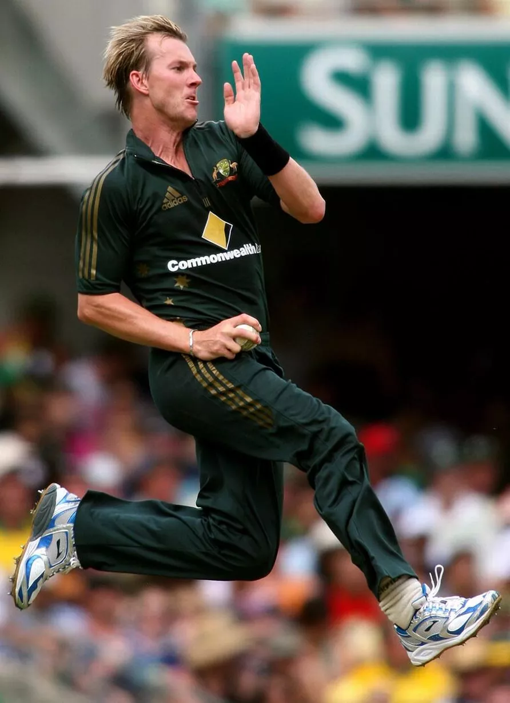
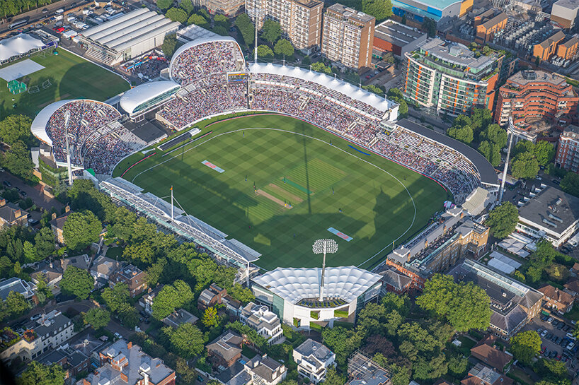

Image Gallery
-  Ben Stokes celebrating after scoring the winning runs in a ashes test match
-  Ben Stokes celebrating after scoring the winning runs in a ashes test match
 Ben Stokes celebrating after scoring the winning
runs in a
ashes test match
Ben Stokes celebrating after scoring the winning
runs in a
ashes test match-  Ben Stokes celebrating after scoring the winning runs in a ashes test match
-  Ben Stokes celebrating after scoring the winning runs in a ashes test match